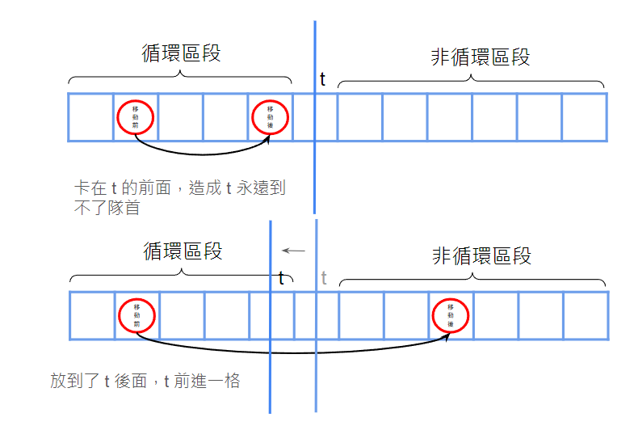

#include<bits/stdc++.h>#define int long long#define pii pair<int, int>#define pb push_back#define mk make_pair#define F first#define S second#define ALL(x) x.begin(), x.end()usingnamespacestd;constintINF=2e18;constintmaxn=3e5+5;constintM=1e9+7;intn,k;inta[maxn],b[maxn];boolcheck(intx){// 求 < x 的數字有幾個intcnt=0;intj=n;for(inti=1;i<=n;i++){while(1<=j&&a[i]+b[j]>=x){j--;}cnt+=j;}returncnt<=k;}signedmain(){cin>>n>>k;k--;for(inti=1;i<=n;i++){cin>>a[i];}for(inti=1;i<=n;i++){cin>>b[i];}sort(a+1,a+n+1);sort(b+1,b+n+1);// 找到最大的 x 滿足小於 x 的個數 <= kintl=1,r=1e11;while(r-l>1){intmid=(l+r)/2;if(check(mid))l=mid;elser=mid;}cout<<l<<'\n';}
#include<algorithm>#include<iostream>#include<vector>#define int long longusingnamespacestd;intn,k;vector<int>a;intcal(intval){intans=0;for(inti=0,j=n;i<n;i++){if(2*a[i]>val)break;while(j>i&&a[j-1]+a[i]>val)j--;ans+=j-i;}returnans;}// 找第 k 小的 a[i] + a[j], 其中 i <= j// 若第 k 小的答案是 m, 會滿足 cal(m-1) < k && cal(m) >= kintsolve(){sort(a.begin(),a.end());intl=2*a[0],r=2*a[n-1];while(l!=r){intmid=l+(r-l)/2;if(cal(mid)>=k){r=mid;}else{l=mid+1;}}returnr;}signedmain(){cin.tie(0);cin.sync_with_stdio(0);cin>>n>>k;k=n*(n+1)/2-k+1;// 改成找第 k 小a=vector<int>(n);for(inti=0;i<n;i++){cin>>a[i];}intans=solve();if(ans%2==0){cout<<ans/2<<'\n'<<1<<'\n';}else{cout<<ans<<'\n'<<2<<'\n';}return0;}
我們先考慮什麼樣的牛拿不到禮物。拿不到禮物代表它前面所有的牛形成了一個循環（這邊說的循環不一定是真正的環，可能就只是某幾項在循環而以，不過這不影響我們的做法），將它擋住了。而他後面的牛也不可能得到，因為相對順序不變。所以這給了我們二分的條件，我們可以去二分循環區段的最末端 t，看 t 是否也是循環的一部分。
如果一個牛是有機會拿到禮物的，那代表前面的牛在一次又一次的循環中會把一頭頭的牛往 t 後面丟，最後讓 t 跑到最前面。而最容易實現讓「本來在 t 前面的牛都跑到他後面」的辦法，就是讓 t 前面的牛按照 \(c_i\) 小到大插入。所以我們可以用這種方法來貪心。具體來說，我們讓 t 前面的牛按照 \(c_i\) 小到大插入，如果是插入到 t 後面，那 t 就可以往前進一格，也就是 t--，但如果插入到了 t 的前面，那麼 t 就不可能獲得禮物了。最後，如果所有牛都插入到了 t 的位置之後，表示此牛 t 能拿到禮物。

因為題目給出的位置是從後往前數的，所以代碼的位置都是以從最後一個向前的若干個的形式表示。
令 a[i] = n - c[i]。假設有某一項在最後經過無限次的循環後，他停留在第 k 個，代表他前面的東西的不會跳超過 k，也就是說對於前面的數量 k - 1 的這些東西，他們的 a[i] 都是 <= k - 1。
所以這個分析能引領我們到一個 greedy 的作法：如果 a[i] <= k 的牛多於 k 個，則這k 個牛就會一直卡在這前 k 個位置。我們可以先二分分界線 t，枚舉 k = [1, t)，看循環區段 a[i] <= k 的牛是否多於 k 個，如果多於，證明二分答案大了，需要縮小有區間，反之則縮小左區間，直到找到答案位置為止。
#include<bits/stdc++.h>#define int long long#define pii pair<int, int>#define pb push_back#define mk make_pair#define F first#define S second#define ALL(x) x.begin(), x.end()usingnamespacestd;constintINF=2e18;constintmaxn=3e5+5;constintM=1e9+7;intn,k;inta[maxn];boolcheck(intx){for(inti=0;i<n;i++){intt=x,cnt=0;for(intj=i;j<n;j++){if(a[j]>=t){returntrue;}cnt+=(t-a[j]);if(cnt>k){break;}t--;}}returnfalse;}voidsolve(){cin>>n>>k;for(inti=0;i<n;i++){cin>>a[i];}intmx=*max_element(a,a+n);intl=mx,r=mx+k+1;while(r-l>1){intmid=(l+r)/2;if(check(mid))l=mid;elser=mid;}cout<<l<<'\n';}signedmain(){intt=1;cin>>t;while(t--){solve();}}
#include<bits/stdc++.h>#define int long long#define pb push_back#define mk make_pair#define pii pair<int, int>usingnamespacestd;constintINF=9e18;constintmaxn=1e3+5;ints[maxn],d[maxn],t[maxn];intn,m;intcheck(intidx,intx,intk){intres=0;for(inti=1;i<=idx;i++){if(d[i]==0){if(s[i]>=x)returntrue;// 代表有無限個 a_x 或 b_x 那 (無限)一定大於 kcontinue;}if(s[i]>=x){res+=(s[i]-x)/d[i]+1;}}returnres>=k;}intget_ans(intidx,intx,intk){intres=0;intx_cnt=0;// 恰等於 x 的有幾個intgreater_cnt=0;// > x 的有幾個for(inti=1;i<=idx;i++){if(s[i]>x){intmx=s[i];intmn=s[i]-(s[i]-x)/d[i]*d[i];inttmp=(s[i]-x)/d[i];if(mn==x){mn+=d[i];x_cnt++;}intc=(mx-mn)/d[i]+1;res+=(mx+mn)*c/2LL;greater_cnt+=c;}if(s[i]==x){if(d[i]!=0)x_cnt++;elsex_cnt=INF;}}res+=min(x_cnt,k-greater_cnt)*x;// 真正可取等於x 的量 = min(等於 x 的, 全 - 大於 x 的)returnres;}voidinit(){cin>>n>>m;for(inti=1;i<n;i++){cin>>t[i];}for(inti=1;i<=n;i++){cin>>s[i];}for(inti=1;i<=n;i++){cin>>d[i];}}voidwork(){intans=0;intk=m;for(inti=1;i<=n;i++){k-=t[i-1];if(k<0)continue;// bin search x: min dust per minuteintl=0,r=2e9;while(l<r-1){intmid=(l+r)>>1;if(check(i,mid,k)){l=mid;}else{// 時間還有剩, mid 不可能是答案r=mid;}}ans=max(ans,get_ans(i,l,k));}cout<<ans<<"\n";}signedmain(){init();work();}
#include<bits/stdc++.h>#include<bits/extc++.h>usingnamespace__gnu_pbds;usingnamespacestd;#define ll long longtypedeftree<int,null_type,less<int>,rb_tree_tag,tree_order_statistics_node_update>ordered_set;intmain(){ios::sync_with_stdio(0);cin.tie(0);cout.tie(0);lln,k;cin>>n>>k;ordered_setst;for(inti=1;i<=n;i++)st.insert(i);vector<int>ans;for(lli=n-1;i>=0;i--){intl=0,r=st.size()-1;while(l!=r){intmid=(l+r)/2;if(mid+i*(i-1)/2>=k)r=mid;elsel=mid+1;}ans.push_back(*st.find_by_order(l));k-=l;st.erase(st.find_by_order(l));}for(auto&i:ans)cout<<i<<' ';}
#include<bits/stdc++.h>#define int long long#define F first#define S secondusingnamespacestd;inta[505][505];signedmain(){intn,m,K;cin>>n>>m>>K;for(inti=1;i<=n;i++){for(intj=1;j<=m;j++){charc;cin>>c;if(c=='+'){a[i][j]+=1;}elseif(c=='-'){a[i][j]-=1;}a[i][j]+=a[i-1][j];}}intmn=2e9;for(intlx=1;lx<=n;lx++){for(intrx=lx;rx<=n;rx++){vector<int>s(m+1);deque<pair<int,int>>dq;dq.push_back({0,0});for(inti=1;i<=m;i++)s[i]=s[i-1]+(a[rx][i]-a[lx-1][i]);for(inti=1;i<=m;i++){while(!dq.empty()&&s[i]-dq.front().F>=K){mn=min(mn,(i-dq.front().S)*(rx-lx+1));dq.pop_front();}while(!dq.empty()&&dq.back().F>=s[i]){dq.pop_back();}dq.push_back({s[i],i});}}}if(mn==2e9){cout<<-1<<"\n";}else{cout<<mn<<"\n";}}
#include<bits/stdc++.h>#define int long longusingnamespacestd;constintINF=2e18;constintMAXN=2e3+5;intn,m,mx,mn;inta[MAXN][MAXN];intg[MAXN][MAXN];voidrotate(){for(inti=1;i<=n;i++){for(intj=1;j<=m;j++){g[j][n-i+1]=a[i][j];}}swap(n,m);for(inti=1;i<=n;i++){for(intj=1;j<=m;j++){a[i][j]=g[i][j];}}}boolcheck(intx){intlim=m+1;for(inti=1;i<=n;i++){intr=0;for(intj=1;j<=min(lim,m);j++){if(mx-x<=a[i][j]){r=max(r,j);}else{break;}}lim=r;for(intj=r+1;j<=m;j++){if(a[i][j]-x>mn){returnfalse;}}}returntrue;}intsearch(){intl=0,r=2e9+5;while(l<r){intmid=(l+r)>>1;if(check(mid)){r=mid;}else{l=mid+1;}}returnr;}signedmain(){cin>>n>>m;mx=-INF,mn=INF;for(inti=1;i<=n;i++){for(intj=1;j<=m;j++){cin>>a[i][j];mx=max(mx,a[i][j]);mn=min(mn,a[i][j]);}}intans=INF;ans=min(ans,search());rotate();ans=min(ans,search());rotate();ans=min(ans,search());rotate();ans=min(ans,search());ans=min(mx-mn,ans);cout<<ans<<"\n";}
#include<iostream>#include<queue>#define int long longusingnamespacestd;intn,a[100010],dp[100010],ps[100010];boolcheck(intt){deque<int>dq;dq.push_back(0);for(inti=1;i<=n+1;i++){while(ps[i-1]-ps[dq.front()]>t){dq.pop_front();}dp[i]=dp[dq.front()]+a[i];while(dq.size()&&dp[dq.back()]>dp[i]){dq.pop_back();}dq.push_back(i);}returndp[n+1]<=t;}signedmain(){inttest;cin>>test;while(test--){cin>>n;for(inti=1;i<=n;i++){cin>>a[i];}a[n+1]=0;for(inti=1;i<=n+1;i++){ps[i]=ps[i-1]+a[i];}intl=1,r=1e18;while(l!=r){intmid=(l+r)/2;if(check(mid)){r=mid;}else{l=mid+1;}}cout<<l<<endl;}}
有無限多個人，目前有 n 個人有鬆餅，第 i 個人有 a[i] 的鬆餅，每分鐘可將一塊鬆餅吃掉，或分給另一個人。總共最多只能分 m 次，問最少幾分鐘可吃完
\(n \le 10^5, m, a_i \le 10^6\)
思路
我們可以去二分搜吃的時間 t，然後看看每一項是否能在 t 這個時間內吃完。對於檢查的部分，我們發現分鬆餅的過程有點像霍夫曼編碼的感覺（每次一個 node 都將自己拆成兩半），可以看成一顆 Full Binary Tree，其中每個 internal node 都代表著一次分配。
對應到剛剛的條件，Full Binary Tree 的葉節點上面的數字應該要小於 t 減掉葉節點的深度，而每一項 a[i] 的 Full Binary Tree 的 internal node 的數量總和要 <= m。我們發現無法確定 internal node 的數量要是多少比較好，但我們又希望在合法的情況下越少越好，於是我們可以試著再做一個二分搜分幾次，假設二分搜到了 k，就變成說要判斷分 k 次的時候能不能在 t 的時間內吃完，那我們可以使我們的 Full Binary Tree 的葉節點上面的數字盡量大，再看看這些葉節點的權值總和是否大於等於 a[i]。因為深度關係到葉節點上面的數字，所以我們盡量讓 Full Binary Tree 的深度越小越好，所以我們可以先填出一個 Perfect Binary Tree（代表著 internal node，然後要使得點的數量 <= k），下面可能還會有不完整的一層（也是 internal node），然後填完後這些點下面能連的地方我們都當作是葉節點。再看看所有葉節點他們最大的權值總和是否 >= a[i] 即可。
#include<bits/stdc++.h>#define int long longusingnamespacestd;intn,m;inta[1000010];intcal(intk,intt){intdep=-1,sz=0;while(sz+(1ll<<(dep+1))<=k){dep++;sz+=1ll<<dep;}intextra_internal=k-sz;intextra_leaf=(1ll<<(dep+1))-extra_internal;returnextra_internal*2*(t-(dep+2))+extra_leaf*(t-(dep+1));}boolcheck(intt){intcnt=0;for(inti=0;i<n;i++){if(a[i]>t){intl=1,r=t;while(l!=r){intmid=(l+r)/2;if(cal(mid,t)>=a[i]){r=mid;}else{l=mid+1;}}cnt+=l;}}returncnt<=m;}signedmain(){cin>>n>>m;for(inti=0;i<n;i++){cin>>a[i];}intl=0,r=1000000;while(l!=r){intmid=(l+r)/2;if(check(mid)){r=mid;}else{l=mid+1;}}cout<<l<<'\n';}